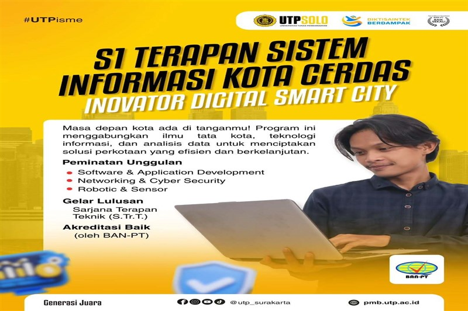

S1 Terapan Sarjana Informasi Kota Cerdas
Program Studi Sistem Informasi Kota Cerdas merupakan program studi mencetak lulusan yang ahli dalam Teknik dan Ilmu Terapan (Applied Science & Engineering) di bidang Pengembangan Perangkat Lunak & Aplikasi (Software & Application Development), Sistem Informasi & Jaringan Kota Cerdas (Smart City Information System & Netwoking) serta ahli dalam bidang Keamanan Informasi & Siber (Cyber & Information Security).

Profil Lulusan
Prodi Sistem Informasi Kota Cerdas UTP Surakarta telah meluluskan alumni yang bekerja sebagai berikut
- Analis Sistem
- Pengembang Perangkat Lunak
- Cybersecurity Analyst
- Programmer
- IT Manager
KAPRODI Sistem Informasi Kota Cerdas
Erni Widarti, M.Kom
Kapasitas
30 Mahasiswa per kelas
Jadwal Kuliah Kelas Pagi
08.00 s/d 15.00 WIB
Jadwal Kuliah Kelas Sore
16.00 s/d 21.00 WIB
Peminatan
- Software & Application Development
- Networking & Cybersecurity
- Bussiness & System Analyst
Classroom Smartcity
Classroom Smartcity adalah konsep ruang kelas modern yang mengintegrasikan teknologi cerdas dan prinsip-prinsip kota cerdas untuk menciptakan lingkungan belajar yang dinamis, interaktif, personal, dan efisien. Ini melampaui sekadar penggunaan proyektor atau papan interaktif, melainkan menciptakan ekosistem pembelajaran yang terhubung dan responsif

Programming & Database Laboratorium
Laboratorium Pemrograman & Basis Data adalah fasilitas khusus yang dirancang untuk memberikan pengalaman belajar praktis dan mendalam dalam bidang ilmu komputer, khususnya terkait pengembangan perangkat lunak dan manajemen informasi. Lab ini menjadi jantung bagi mahasiswa dan peneliti untuk mengaplikasikan teori yang telah dipelajari di kelas, bereksperimen dengan berbagai bahasa pemrograman, serta memahami konsep dan implementasi sistem basis data

Netwoking & Cybersecurity Laboratorium
Laboratorium Jaringan & Keamanan Siber adalah fasilitas mutakhir yang didedikasikan untuk pengembangan keterampilan praktis dan pemahaman mendalam tentang arsitektur jaringan komputer, protokol komunikasi, serta praktik terbaik dalam melindungi sistem informasi dan data dari ancaman siber. Lab ini berfungsi sebagai lingkungan simulasi yang aman di mana mahasiswa dan profesional dapat bereksperimen, menganalisis, dan mempraktikkan berbagai skenario jaringan dan serangan siber tanpa risiko membahayakan jaringan produksi.

Robotic & Microcontroler Laboratorium
Laboratorium Robotika & Mikrokontroler adalah pusat inovasi dan pembelajaran praktis yang didedikasikan untuk eksplorasi dan pengembangan sistem robotika, perangkat cerdas, dan sistem tertanam (embedded systems). Fasilitas ini dirancang untuk menjembatani kesenjangan antara teori dan aplikasi nyata, memungkinkan mahasiswa, peneliti, dan penggemar untuk merancang, membangun, memprogram, dan menguji perangkat keras dan perangkat lunak yang menggerakkan dunia otomatisasi dan kecerdasan buatan.